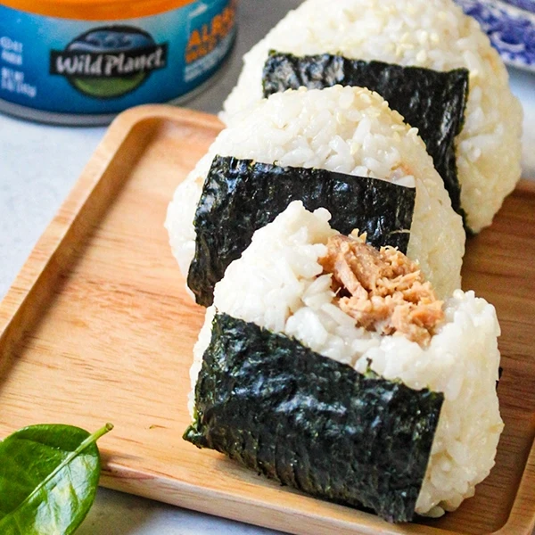

Onigiri

Onigiri with Salmon Filling
This is a classic recipe from Japan.
Fluffy rice in a shape of a ball with meat filling.
Also known as donuts from Pokemon the Anime.
Ingredients
- 1 Cup Short Grain Rice
- 1 LB Fresh Caught Salmon
- 1 Box Nori Sheets
- 1/2 Cup Furikake
Steps
- Wash rice until water is clear when draining
- Cook rice according to instructions on bag
- Cook salmon on grill
- Shred salmon
- Mix rice with furikake
- Make a triangle from rice and place shredded salmon in the center
- Either wrap the entire onigiri or just the bottom portion with the nori sheets
Now it is up to you whether you want to eat them now or place them in the fridge and have it as a meal later.
Home [Prev]